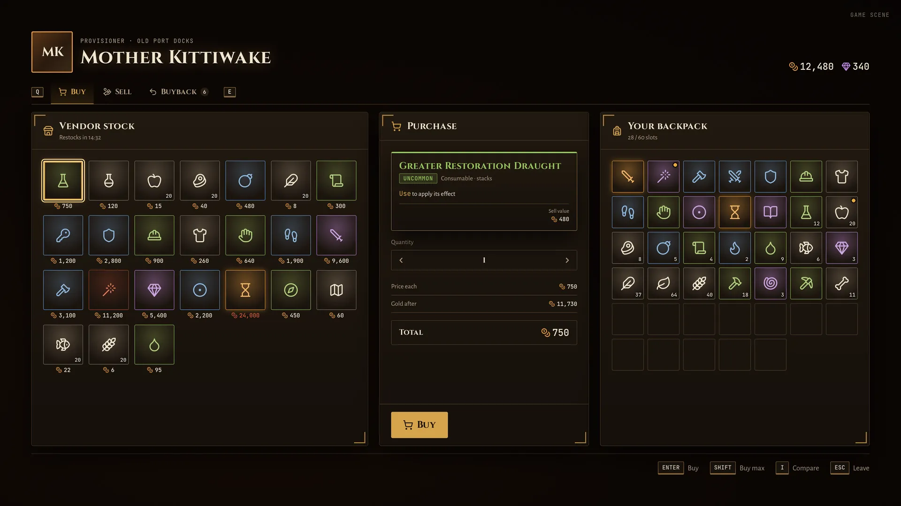
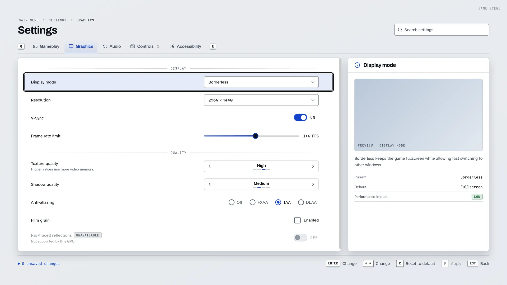
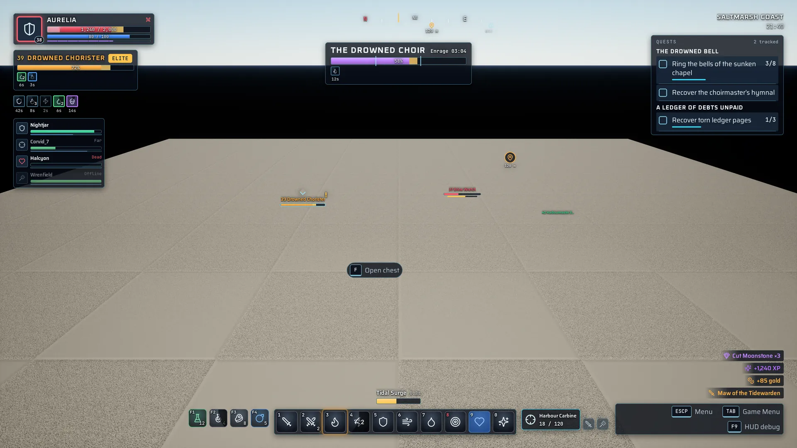

Arc Lunzo. Game UI in HTML and CSS.
An Unreal Engine 5 plugin. Write RML and RCSS, bind it to ViewModels and render it on a dedicated UI threadTODO: verify.

The markup is the UI.
The same files your UI artists edit are what the game renders. Pick an example to see the RML, the RCSS and the result.
<rml>
<head>
<meta name="layer" content="UI.Layer.Menu"/>
<meta name="input-mode" content="menu"/>
<link type="text/rcss" href="Settings.rcss"/>
<viewmodel name="settings" class="/ArcRmlUIDemo/Demo/ViewModels/BP_ArcRmlDemoSettingsVM.BP_ArcRmlDemoSettingsVM_C"
resolver="/Script/ArcRmlUIDemo.ArcRmlDemoViewModelResolver"/>
</head>
<body>
<div class="st-frame" data-model="settings" data-event-back="call('', 'Back'); stopPropagation()">
<div class="st-group" data-for="stGroup : Groups">
<dc-import name="/ArcRmlUIDemo/UI/Rml/Demo/Components/Divider" label="{{ stGroup.Title }}"/>
<dc-import name="/ArcRmlUIDemo/UI/Rml/Demo/Components/SettingRow" data-for="stRow : stGroup.Rows"
label="{{ stRow.Label }}" description="{{ stRow.Description }}" field="{{ stRow.Field }}"
data-event-click="call('', 'Activate', stRow.Field)">
<dc-import name="/ArcRmlUIDemo/UI/Rml/Demo/Components/Toggle" data-if="stRow.Type == 'toggle'"
on="{{ stRow.bOn }}" on-label="On" off-label="Off"
data-event-click="call('', 'Activate', stRow.Field); stopPropagation()"/>
<dc-import name="/ArcRmlUIDemo/UI/Rml/Demo/Components/Slider" data-if="stRow.Type == 'slider'"
value="{{ stRow.Value }}" min="{{ stRow.Min }}" max="{{ stRow.Max }}" step="{{ stRow.Step }}"
value-label="{{ stRow.ValueLabel }}" field="{{ stRow.Field }}"/>
</dc-import>
</div>
</div>
</body>
</rml>.st-frame {
position: relative;
height: 100%;
box-sizing: border-box;
display: grid;
grid-template-rows: auto auto minmax(0, 1fr) auto;
gap: var(--ui-space-4);
padding: clamp(24px, 3.5vw, 72px);
}
.st-head {
display: flex;
align-items: flex-end;
justify-content: space-between;
gap: var(--ui-space-4);
flex-wrap: wrap;
}
.st-body {
display: grid;
grid-template-columns: minmax(0, 1fr) minmax(300px, 30%);
gap: var(--ui-space-5);
min-height: 0;
}
<rml>
<head>
<meta name="layer" content="UI.Layer.Game"/>
<meta name="input-mode" content="all"/>
<link type="text/rcss" href="Hud.rcss"/>
<viewmodel name="hud" class="/ArcRmlUIDemo/Demo/ViewModels/BP_ArcRmlDemoHudVM.BP_ArcRmlDemoHudVM_C"
resolver="/Script/ArcRmlUIDemo.ArcRmlDemoViewModelResolver"/>
</head>
<body>
<div class="hud-frame" data-model="hud">
<div class="hud-top">
<dc-import name="/ArcRmlUIDemo/UI/Rml/Demo/Components/Badge" label="{{ Mode }}" tone="accent"/>
<span class="hud-where">{{ Where }}</span>
</div>
<div class="hud-bottom">
<dc-import name="/ArcRmlUIDemo/UI/Rml/Demo/Components/InputPrompt"
key-label="{{ ArcKeys.IA_ArcDemo_OpenVendor }}" label="Vendor"
data-hotkey="IA_ArcDemo_OpenVendor" data-event-click="call('', 'OpenVendor')"/>
</div>
</div>
</body>
</rml>.hud-frame {
position: relative;
height: 100%;
box-sizing: border-box;
display: flex;
flex-direction: column;
justify-content: space-between;
padding: clamp(24px, 3.5vw, 72px);
}
.hud-top {
display: flex;
align-items: center;
gap: var(--ui-space-3);
}
.hud-where {
font-family: var(--ui-font-mono);
font-size: var(--ui-fs-2);
color: var(--ui-text-muted);
}
.hud-bottom {
display: flex;
flex-direction: column;
align-items: flex-end;
gap: var(--ui-space-3);
}
What ships in the plugin.
Feature list is placeholder copy until each item is verified against the release build.
Layout checked against ChromeTODO: verify
Block and flexbox layout is compared with Chrome's output, so CSS behaves the way you expect.
Dedicated UI threadTODO: verify
Documents are laid out and rendered on their own thread, away from the game thread.
MVVM data bindingTODO: verify
Declare view models with <viewmodel> in the document head, read their fields with data-model, data-for and {{ }}, and call their functions from events with call().
CommonUI and Enhanced InputTODO: verify
Focus, navigation and input actions go through CommonUI and Enhanced Input.
Hot-reloadable markupTODO: verify
Save an .rml or .rcss file and the running document reloads in the editor.
HTML and CSS you already knowTODO: verify
RML is an HTML dialect and RCSS a CSS subset: flexbox, transforms, transitions.
Three steps from file to screen.
No widget blueprints to keep in sync. The document and the ViewModel are the whole contract.
Write markup
Describe the screen in RML, declare its view model in the head and style it with RCSS. Events call view model functions.
<rml>
<head>
<link type="text/rcss" href="Lists.rcss"/>
<viewmodel name="lists" class="/Script/ArcRmlUISamples.ArcRmlSamplesListsViewModel" create="true"/>
</head>
<body data-model="lists">
<div class="ls-row" data-for="r, i : Items" data-key="r.Name">
<span class="ls-name">{{ i + 1 }}. {{ r.Name }}</span>
<span>x{{ r.Quantity }}</span>
<button data-event-click="call('', 'Remove', i)">Remove</button>
</div>
<button data-event-click="call('', 'Add')">Add</button>
</body>
</rml>Bind a ViewModel
Expose game state as FieldNotify properties of an Unreal MVVM view model; its UFUNCTIONs are what the document calls.
UCLASS()
class UArcRmlSamplesListsViewModel : public UMVVMViewModelBase
{
GENERATED_BODY()
public:
UPROPERTY(BlueprintReadOnly, FieldNotify, Category = "Samples")
TArray<FArcRmlSamplesListsRow> Items;
UFUNCTION(BlueprintCallable, Category = "Samples")
void Add();
UFUNCTION(BlueprintCallable, Category = "Samples")
void Remove(int32 Index);
};Show it in game
Open the document through the local player's viewport subsystem. The declaration in the head creates the view model.
UArcRmlViewportSubsystem* Viewport =
LocalPlayer->GetSubsystem<UArcRmlViewportSubsystem>();
const FArcRmlDocumentRef Document{
TEXT("/ArcRmlUISamples/UI/Rml/Lists/Lists.rml")};
Viewport->OpenDocument(Document);From the demo UI kit.
Six screens across five themes. Click one to open it larger.


Technical details.
Values in brackets are placeholders.
| Engine version | Unreal Engine 5.8 |
|---|---|
| Platforms | Win64 |
| Modules | [ArcRmlUI, ArcRmlUIEditor, ...] |
| Dependencies | ModelViewViewModel, CommonUI, EnhancedInput |
| Documentation | [DOMAIN]/docs/arcrmlui/ |
| Support | Discord, support.arcx@gmail.com |
What comes next.
Plans, not promises: no dates, and the order can change.
Next update
- Documents in the game world: render a document onto a surface in the level and interact with it.
- Faster first open of a screen: styles and layout prepared before the screen is first shown.
- Transform and opacity animations composited on the GPU.
- Tailwind CSS 4 builds without warnings, synthesized bold and the :focus-visible ring.
- More CSS: table-layout: fixed, <caption> and more color-mix color spaces.
Workflow and Blueprint
- A binding editor in the style of UMG: bind view model fields to elements without writing data attributes by hand.
- A screen router: named screens, back history and preload.
- A fuller Blueprint API: open-state checks, focus and input mode, theme switching.
- View model checks (unknown fields, call arguments) in the editor preview and computed styles in the inspector.
- VS Code settings for .rml and .rcss, and an "Open in external editor" action.
Platforms and new ground
- Platforms beyond Win64.
- Right-to-left text (Arabic, Hebrew).
- Split-screen.
- Optional TSX authoring, compiled to RML, with no JavaScript at runtime.
- An AI skill that translates HTML and CSS into RML, shipped with the plugin.
- A free Figma export plugin.
- A performance page in the docs.
Start building UI in HTML and CSS.
Get Arc Lunzo on Fab, then follow the quick start to put your first document on screen.
Questions.
Anything else: ask on Discord or email support.arcx@gmail.com.
Is this the same as RmlUi?
No. Arc Lunzo draws documents with its own fork of RmlUi that lays out, shapes and paints CSS closer to Chrome and starts from a browser's default styles. Data binds to Unreal MVVM view models declared in the document instead of data models built in C++, and input runs through CommonUI and Enhanced Input. RmlUi's Lua, debugger and Lottie are not included. The full list: Coming from RmlUi.
Which engine versions are supported?
Unreal Engine 5.8 on Win64. Other engine versions and platforms are not supported yet.
Do I need C++ to use it?
No. Markup and styles need no C++, and view models can be written in Blueprint or in C++; only struct lists and view model resolvers need C++. The docs cover both: Blueprint view models and View models.
Can I use it next to UMG?
Yes. Documents open on CommonUI layers of the player's viewport, and your UMG widgets stay on screen next to them. A Widget Blueprint can also show a document: drop the document widget from the Designer palette into its tree. See A document in a UMG widget.
Where do I get support?
Ask on Discord or email support.arcx@gmail.com. For a bug, include your engine version and a minimal repro.